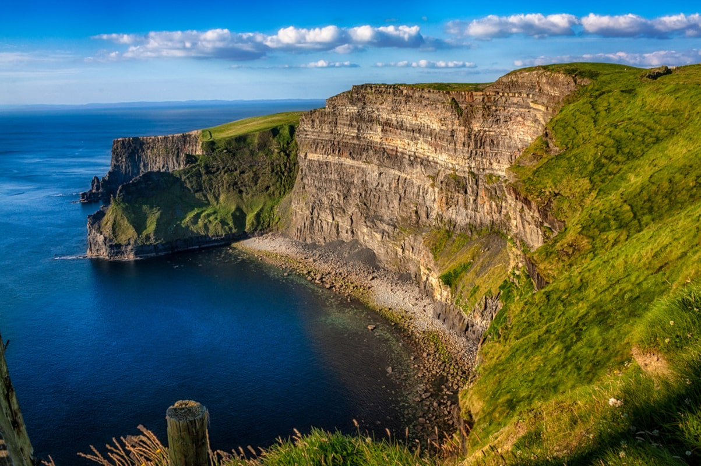
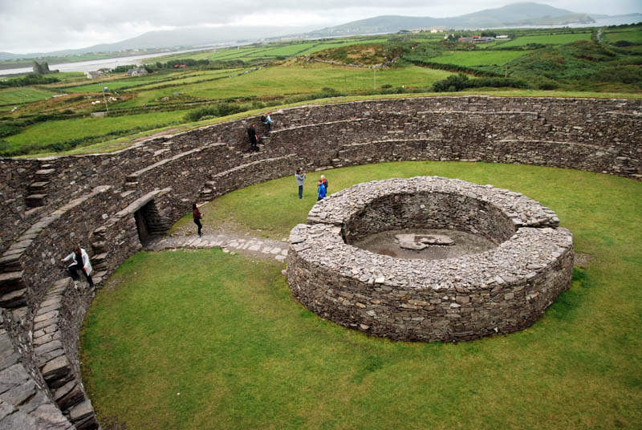
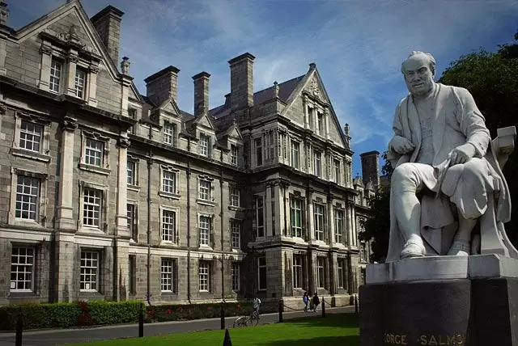
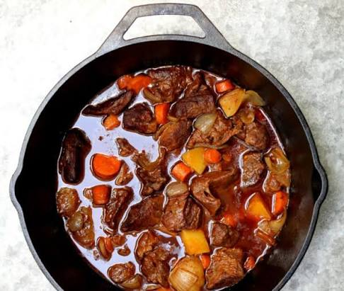
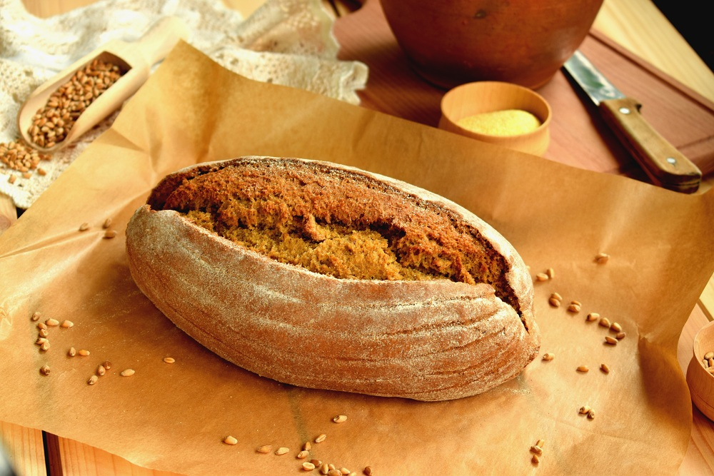
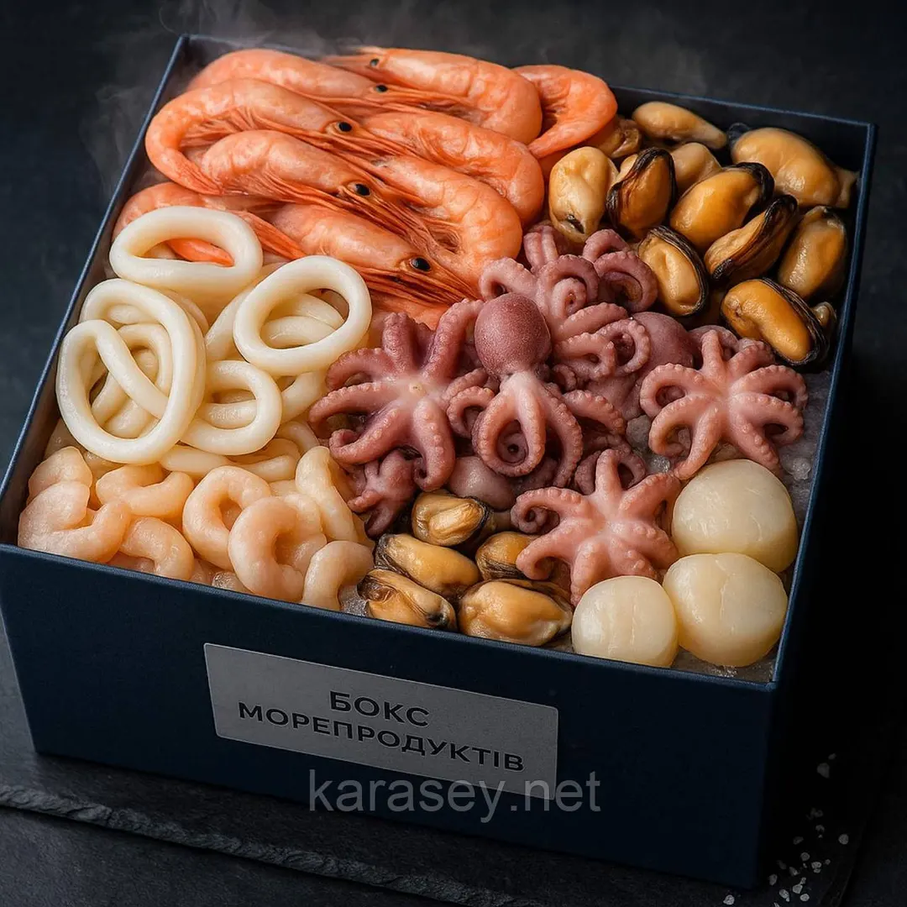
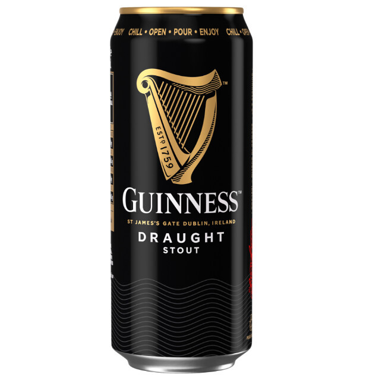
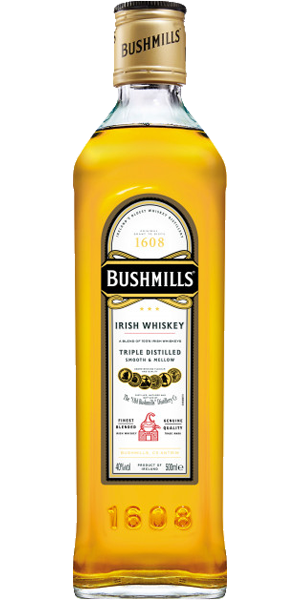

Визначні пам'ятки
Скелі Мохер (Cliffs of Moher): Величні 200-метрові прямовисні скелі над Атлантичним океаном — одна з найвідоміших природних візитівок країни.

Скелі Мохер (Cliffs of Moher) — це одна з найвідоміших та наймальовничіших природних пам'яток Ірландії, розташована на західному узбережжі графства Клер. Ці величні вертикальні стіни з вапняку та сланцю піднімаються на висоту до 214 метрів над дикими хвилями Атлантичного океану і тягнуться вздовж узбережжя приблизно на 14 кілометрів. Завдяки своїм неймовірним краєвидам, скелі Мохер офіційно визнані одним із найкращих місць у світі для милування морськими пейзажами.
Кільце Керрі (Ring of Kerry): Мальовничий панорамний маршрут уздовж південно-західного узбережжя з національним парком Кітларні, озерами та замками.

Кільце Керрі в Ірландії — це знаменитий 179-кілометровий туристичний маршрут з мальовничими краєвидами на Атлантичний океан, зеленими пагорбами та національними парками.
Дублін та Триніті-коледж: Історичне серце столиці з бібліотекою, де зберігається старовинна Келлська книга, та жвавим районом Темпл-Бар.

Трініті-коледж — це найстаріший виш в Ірландії, заснований у 1592 році. Світлини кампусу демонструють дивовижне поєднання класичної георгіанської архітектури, величних бібліотечних залів та яскравого сучасного студентського життя у самому центрі Дубліна.
Дорога Гігантів (Giant's Causeway): Унікальне геологічне утворення з десятків тисяч базальтових колон щільно з'єднаних між собою (Північна Ірландія).

Дорога Гігантів (Giant's Causeway) — це унікальне природне утворення на північному сході Північної Ірландії (поблизу міста Бушмілс), що складається з приблизно 40 000 щільно з'єднаних між собою базальтових і андезитових колон.
Скеля Кашел (Rock of Cashel): Стародавній комплекс середньовічних споруд і готичного собору на вапняковій скелі, де за переказами жив святий Патрик.

Скеля Кашел є однією з найбільш відвідуваних визначних пам'яток в Ірландії, також відома як скеля Святого Патріка. Ще це місце називають скелею королів. Розташований стародавній кельтський собор в ірландському графстві Тіпперері. Замок, зведений у 4 столітті, був монаршою резиденцією провінцій південної Ірландії, через 100 років у ньому влаштувався Святий Патрік. Після нападу армії Кромвеля замковий комплекс став символом стійкості та відваги ірландських мешканців. На території замку збереглися житлові споруди, споруди господарського призначення та руїни собору.
Кухня та гастрономія
Ірландська кухня — проста, ситна та комфортна. Основу традиційних страв складають яловичина, баранина, картопля, свіжі морепродукти й молочні продукти найвищої якості. Головні гастрономічні візитівки країни — це густе ірландське рагу (Irish Stew), ароматний содовий хліб, свіжі устриці та легендарний темний стаут Guinness.
Ірландське рагу (Irish Stew): Традиційна зігрівальна страва з ніжньої тушкованої баранини або яловичини, картоплі, цибулі та моркви.

Ірландське рагу (Irish stew) — це знаменита класична страва ірландської кухні, яка являє собою густу печеню з м'яса та овочів. Традиційно його готують на основі баранини або яловичини, додаючи великі шматки картоплі, моркви та цибулі. Особливого, насиченого смаку та глибокого темного кольору страві часто надає додавання знаменитого ірландського темного пива типу Guinness. Страва довго тушкується на повільному вогні або в духовці, завдяки чому м'ясо стає надзвичайно м'яким, а соус — густим та ароматним.
Содовий хліб (Soda Bread): Духмяний домашній хліб на сколотині без використання дріжджів, який подають гарячим із солоним ірландським маслом.

Содовий хліб — це традиційний швидкий бездріжджовий хліб, який готується на основі борошна, соди та кисломолочного продукту (кефіру, пахти або молока з лимонним соком). Він має пишну м'яку серединку та хрустку рум'яну скоринку.
Черінг-бокс та морепродукти: Завдяки океану країна славиться свіжими устрицями, дублінськими креветками та копченим лососем.

Черінг-бокси (або шеринг-бокси) з морепродуктами — це популярні гастрономічні набори для компаній, які містять асорті з риби, креветок, устриць, мідій та інших делікатесів. Такі набори ідеально підходять для вечірок, фуршетів або святкових вечерь, оскільки їх зручно ділити між гостями (від англ. to share — ділитися).
Пиво Guinness: Легендарний темний стаут із густою кремовою пінкою, який найкраще смакує в автентичному ірландському пабі під живу музику.

Пиво — це один із найдавніших та найпопулярніших алкогольних напоїв у світі, який виготовляють шляхом бродіння сусла з ячмінного солоду, хмелю та води за допомогою пивних дріжджів. Його історія налічує тисячі років і тісно пов'язана з розвитком людської цивілізації, адже перші згадки про пивоваріння походять ще з часів Стародавнього Єгипту та Месопотамії. Напій цінувався не лише за свій смак, а й за поживність, через що в деяких культурах його навіть називали рідким хлібом.
Ірландське віскі та кава: Знамениті бренди віскі (Jameson, Bushmills) та зігріваючий коктейль Irish Coffee (кава з віскі, цукром і вершками).

Ірландське віскі та кава — це класичне та перевірене часом поєднання, яке ідеально розкривається в легендарному гарячому коктейлі Irish Coffee (Кава по-ірландськи). На відміну від шотландського скотчу з його димним присмаком, традиційне ірландське віскі проходить потрійну дистиляцію, завдяки чому має дуже м'який, фруктово-ванільний смак, що бездоганно доповнює міцну чорну каву.
Культура та традиції
Ірландська культура — це унікальне поєднання стародавніх кельтських традицій, глибокої літературної спадщини та неймовірно теплої, відкритої душі місцевих жителів. Вона сформувалася під впливом суворого океанічного клімату, багатого фольклору та складної історії, що перетворило прагнення до спілкування на головну національну цінність. Мова та фольклор Хоча більшість населення щодня спілкується англійською, ірландська мова (Gaeilge) має статус державної й активно підтримується в регіонах Gaeltacht. Саме в мові збереглася особлива кельтська поетичність та схильність до іронії. Фольклор країни населений не лише знаменитими лепреконами та чарівницями банші, а й переказами про давніх воїнів, таких як Кухулін, та міфічні королівства. Музика як спосіб життя Музика в Ірландії звучить усюди. Традиційні музичні сесії (trad sessions) виникають спонтанно: люди просто збираються в пабах із гармоніками, скрипками, флейтами та бойранами (традиційними бубнами), щоб грати разом без жодних партитур. Цей ритм пронизує і знаменитий ірландський степ — від вуличних виступів до світових шоу на кшталт Riverdance. Феномен пабної культури та Craic Ірландський паб — це не про алкоголь, а про спільноту та концепцію craic (слово, що означає дружню розмову, веселощі, гумор і гарно проведений час). Вважається цілком нормальним заговорити з незнайомцем за сусіднім столиком, поділитися історією чи разом посміятися. Паб слугує вітальнею для всієї громади, де вирішуються справи, відзначаються свята та відпочивають після робочого дня. Літературний спадок Невелика острівна країна подарувала світу чотирьох нобелівських лауреатів з літератури (Вільям Батлер Єйтс, Джордж Бернард Шоу, Семюел Бекет і Шеймас Гіні), а також таких велетнів, як Джеймс Джойс та Оскар Уайльд. Любов до влучного слова, казки та глибокої розповіді (storytelling) є незмінною рисою кожного ірландця.
Особисті враження
Коли ти вперше ступаєш на ірландську землю, найбільше вражає нереальна насиченість барв: зелений колір пагорбів здається настільки яскравим, ніби його підсилили у графічному редакторі, а океан протилежно суворий та величний. Але найсильніше емоційне враження залишають самі люди. В Ірландії ви не почуватиметеся чужинцем — варто лише зайти увечері в найближчий паб, і вже за п'ять хвилин місцеві жителі підхоплять вас у невимушену розмову, порадять найкращі таємні куточки свого містечка та разом із вами співатимуть під живу музику. Тут панує відчуття дивовижного затишку, де стародавні легенди природно співіснують із сучасним життям, а кожна поїздка залишає глибокий і теплий спогад у серці.